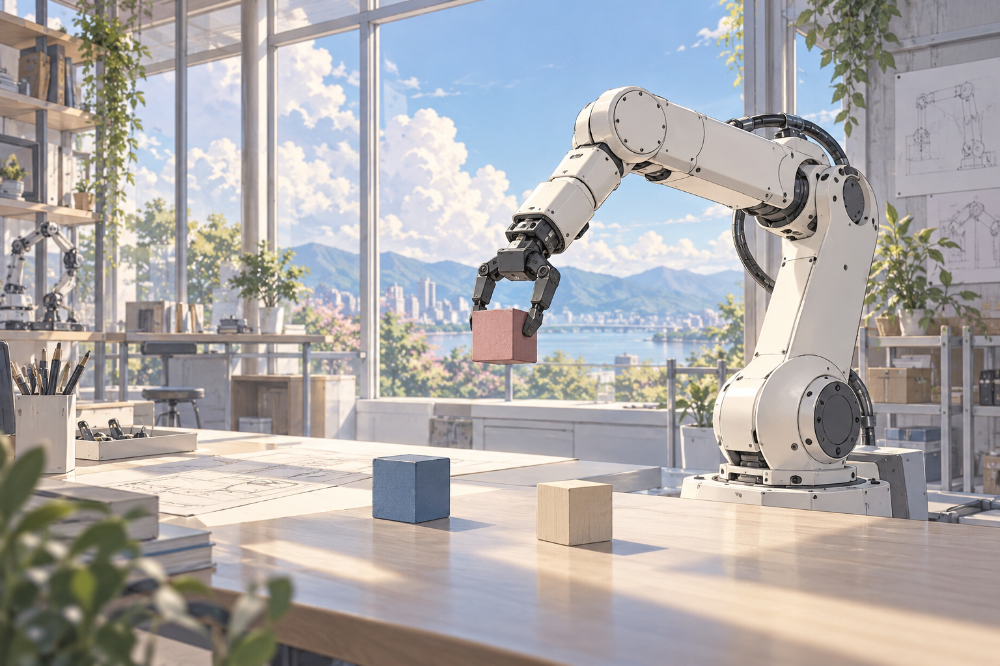

World model
All-clean actionsPredict the effect of known actions.
OneWM
One causal model learns to predict the world
and act in it.

01 / THE IDEA
A world model learns what happens when a robot acts.
A policy learns which action to take.
Can learning one help the other?
Predict the effect of known actions.
Learn world prediction and action together.
Predict with noisy action conditions.
Predict without reading action tokens.
Clean-action prediction strengthens control and generalization.
Learning actions improves future-video prediction.
02 / HOW IT WORKS
Actions are both conditions for prediction
and targets for learning.
A clean prefix conditions future-video prediction and denoising of the remaining action suffix.
03 / IN THE REAL WORLD
Precise placement. Careful alignment.
Everyday manipulation, on a real robot.
Full robot recordings · Original speed · Silent
04 / IMAGINED FUTURES
Watch how the predicted future follows a sequence of actions.
Loading recorded examples…
Same actions, two futures. Drag to rotate the recorded trajectory; scrub to follow the motion.
Each clip starts with an observed frame, followed by eight predictions. Reference video and conditioning actions come from the same sample. The 3D path shows recorded end-effector positions in metres; it is not a predicted path. Action values are raw controller commands, not displacements in metres. Sample details include timing and model information.
05 / A NEW FINDING
Give OneWM an initial observation and a task. It predicts the next actions, imagines their consequences, then uses its own predicted view to decide what to do next.
After the first observation, OneWM sees only what it imagines.
OneWM · LIBERO
32 controls from the current view.
8 future frames, guided by those actions.
Feed it back. The next round begins.
Unified causal training connects policy and world prediction: OneWM can carry a task forward inside a world it generates itself.
Selected task:
16 rounds · 512 predicted actions · 25.6 s in imagination
Each LIBERO example starts from one dual-camera observation and a task instruction. The same OneWM checkpoint alternates action prediction and action-conditioned video prediction. Every later visual input is its own last generated frame; no later recorded observations or recorded actions enter the loop.
The animation reveals each saved 32-action prediction in temporal order, then plays its corresponding eight future frames. The 3D path accumulates the predicted translation commands within each round; it is a relative control path, not a measured end-effector trajectory. Values use the experiment’s denormalized actions. The pauses illustrate the loop, not inference speed.
All six examples retain the full 16 rounds. This experiment evaluates imagined task progression. Simulator execution and automatic completion detection are outside this experiment; long rollouts can show drift and generation artifacts.
06 / WHAT WE FIND
Matched comparisons support reciprocal benefits.
Policy success
vs. WAMmaskBetter PSNR, SSIM & LPIPS
Across all three benchmarks, against the same-architecture world model.Real-world success: 48.9% → 66.7%, WAMmask → OneWM. Three tasks; 15 trials per task and model.
World prediction, PSNR ↑: LIBERO 22.33 → 22.95 · LIBERO-Plus 20.54 → 21.05 · RoboCasa365 24.72 → 25.21. Same MoT architecture, WM → OneWM.
Selected paper results. Distributional metrics and individual perturbation categories show a more nuanced picture.
Explore the architecture, experiments, and findings in the paper.
Read the paperCan World and Action Modeling Benefit Each Other under Unified Causal Training?
Yue Su, Bokai Lin, Xinkai Wang, Chubin Zhang, Xiangnan Wu, Kuan Zhang, Weiyang Jin, Jiwen Yu, Yiming Li, Cewu Lu, Lixin Yang, Xihui Liu.